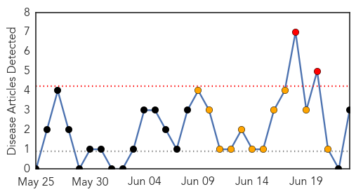
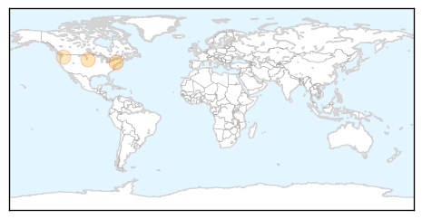
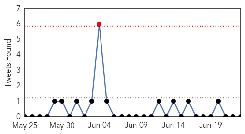
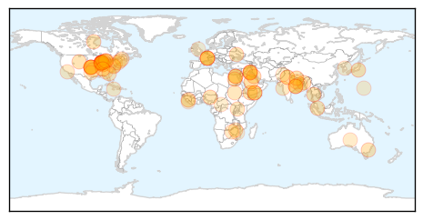
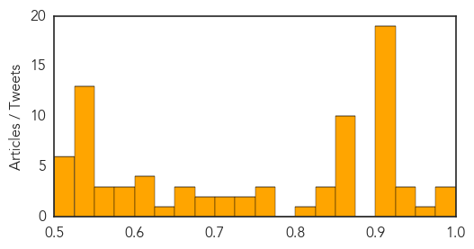

West Nile Virus
30-Day Web Trend
2 alerts, 11 warnings

30-Day Twitter Trend
0 alerts, 0 warnings

Article Locations
Article Confidences

Top Articles:
Top Tweets:
-
No tweets found for Jun 23, 2014
Unknown
30-Day Web Trend
0 alerts, 0 warnings

30-Day Twitter Trend
0 alerts, 0 warnings

Article Locations
Article Confidences
Top Articles:
- 0.999
- Expat Health Centres Closed As Deadly Virus Spreads
- 0.996
- The World On Arirang
- 0.989
- Ebola virus disease, West Africa – update « African Press International (API)
- 0.958
- U.S. Disease Detectives to Discuss MERS -- NASHVILLE, Tenn., June 23, 2014 /PRNewswire-USNewswire/ --
- 0.942
- Central team visits malaria-hit areas of Tripura
- 0.940
- Director Of CDC Lab Responsible For Potential Anthrax Exposure Has Been Reassigned
- 0.937
- Experts visit malaria-hit areas of Tripura
- 0.917
- Chicago Tribune
- 0.917
- Chicago Tribune
- 0.917
- Chicago Tribune
- 0.917
- Chicago Tribune
- 0.917
- Chicago Tribune
- 0.917
- Chicago Tribune
- 0.917
- Chicago Tribune
- 0.917
- Chicago Tribune
- 0.917
- Chicago Tribune
- 0.917
- Chicago Tribune
- 0.917
- Chicago Tribune
- 0.917
- Chicago Tribune
- 0.917
- Chicago Tribune
- 0.917
- Chicago Tribune
- 0.917
- Chicago Tribune
- 0.917
- Chicago Tribune
- 0.917
- Chicago Tribune
- 0.917
- Chicago Tribune
- 0.910
- The world windows to Thailand
- 0.873
- Transparency or confusion? Debating the merits of hospital-acquired infections reporting
- 0.866
- U.S. says its forces get immunity guarantees from Iraq
- 0.866
- Putin, Obama discuss Ukrainian president's peace plan by phone
- 0.866
- White House condemns sentencing of Al Jazeera journalists in Egypt
- 0.866
- Blast tears through college in northern Nigeria, kills seven
- 0.866
- Kuwait withdraws envoy from Iraq due to security situation
- 0.866
- French Ecology, Sustainable Development and Energy Minister Segolene Royal and Finance Minister Michel Sapin speak to the journalists after a conference about the financing of energy transition in Par
- 0.866
- French Ecology, Sustainable Development and Energy Minister Segolene Royal and Finance Minister Michel Sapin arrive to attend a conference about the financing of energy transition in Paris
- 0.866
- Plane carrying prominent anti-govt cleric diverted in Pakistan
- 0.866
- SINGAPORE PRESS-Singapore targets Euro 6 emission standards for vehicles
- 0.850
- ACT meningococcal victim on the mend
- 0.849
- Polio virus found in Sao Paulo sewage, no human case - WHO
- 0.842
- Latest news on sustainable development, features, opinions, interviews with NGO leaders and multimedia from India and South Asia
- 0.807
- Invisible threats: What hospitals are doing to make you safer from infections
- 0.763
- Health department sounds encephalitis alert
- 0.763
- 50,000 South Sudanese children at risk of death - South Sudan
- 0.755
- 8,200 sit for allied health exams countrywide
- 0.742
- Richmond Hill Periodontist Dr. Justin Bordlemay Extends LANAP® Treatment Services to Periodontal Disease Patients in Savannah, GA
- 0.729
- We Need Global Response To Antibiotic Resistance Crisis
- 0.725
- Death toll in Tripura malaria outbreak hits 41
- 0.701
- CHRA community monitors expose serious diarrhoea outbreak in Mabvuku - Zimbabwe
- 0.699
- The Portland Press Herald / Maine Sunday Telegram
- 0.678
- 16,000 on ART in Tsholotsho
- 0.675
- SERHA names 8 communities with unsafe water
Showing top 50 articles...
Top Tweets:
- 0.654
- Doblete de Camila Giangreco en el profesional de Melilla, España: Un espectacular inicio tuvo la juvenil ten... http://t.co/nleLfAC5tp